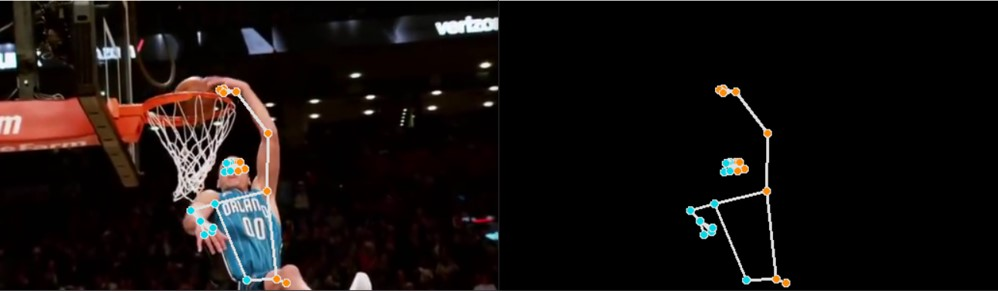

關於我
姓名：楊程凱
人格特質：
MBTI性格測驗：ISFJ照顧者型→值得信賴和依靠
沉靜，友善，做事謹慎具有責任感
實際，有條理，認真仔細
具有同理心，能夠理解他人感受
平和謙遜，樂於協助他人
敏銳的洞察力
注重規則、政策、契約、例行習慣和時間要求
專長：文書處理、簡報製作、專題製作
證照：
電腦軟體應用-乙級
會計事務資訊-丙級
門市服務-丙級
全民中文能力檢定中級
TIMS初階行銷企劃證照
心肺復甦術合格證書
競賽：
2024台灣永續報告書個案研究競賽-入圍決賽
2021全國高中職創意與創業暨小論文專題競賽-季軍
2021全國高級中等學校小論文寫作比賽-特優
2021全國高級中等學校閱讀心得寫作比賽-優等
學歷：
國立臺灣科技大學 企業管理系＆師資培育學生（大三）
🎓國立鹿港高級中學 商業經營科
研習：
112學年度靜宜大學-未來教師與未來教學展望學術研討會
112學年度國立臺灣科技大學-一般課程教學助理研習會
服務學習：
112學年度彰化市弱勢家庭兒童5日夏令營活動擔任課業輔導志工老師
112學年度教育部史懷哲精神教育服務計畫
111學年度創新跨國服務教育共學計畫-國際數位學伴
108/12/27南華大學社福類志工特殊訓練研習營
作品集
臉部關鍵點偵測
◆MediaPipe的臉部偵測（Face Detector）任務可以從影像或影片中辨識出人臉的位置。
◆透過這項技術，您能夠在畫面中標示出人臉的位置和臉部的特徵點。
◆這項任務運用了機器學習（Machine Learning）模型來處理單張圖像或連續的影像串流，並輸出人臉的位置及多個臉部關鍵點，例如：雙眼、鼻尖、嘴巴，還有左右耳 tragion 等部位。
臉部地標偵測
◆MediaPipe Face Landmarker 可以在圖片或影片中偵測臉部的特徵與表情，應用於臉部表情辨識、濾鏡特效、以及虛擬人物建立。
◆這項功能運用機器學習（Machine Learning）模型，能處理單張影像或連續的影像串流。
◆輸出結果包含3D臉部地標、臉部表情的混合形狀分數，以及用於特效呈現的轉換矩陣，能即時呈現臉部的細微動態。
Pose Estimation
◆MediaPipe Pose Landmarker 可以在圖片或影片中偵測人體地標，用來分析姿勢及辨識動作。
◆這項功能運用機器學習（Machine Learning）模型，能處理單張圖片或影片。
◆輸出的資料包含人體姿勢地標，並以圖片座標與 3D 世界座標兩種形式呈現。

Hand Landmarks Detection
◆MediaPipe Hand Landmarker 可以偵測圖片中手部的重要地標，並在手部上顯示視覺效果。
◆這項功能運用機器學習（Machine Learning）模型，以靜態或持續串流形式處理圖片資料。
◆輸出的資料包含圖片座標中和世界座標中的手標記，並能辨識偵測到的是左手還是右手。

Gesture recognition
◆MediaPipe 的手勢辨識器可以即時辨識手勢，提供偵測到的手部地標與辨識結果（辨識使用者做出的特定手勢）。
◆這項功能運用機器學習（Machine Learning）模型，以靜態或持續串流形式處理圖像資料。
◆輸出的資料包含圖像座標中和世界座標中的手標記、辨識左右手，以及多隻手所對應的手勢類別。

Streamlit+CV2
Streamlit 是一個用 Python 編寫的開源框架，讓開發者能夠快速將資料科學與機器學習模型轉換成互動式的網頁應用程式。結合 OpenCV（Open Source Computer Vision Library）後，您可以輕鬆打造各種視覺化功能，例如：即時影像處理、物件偵測、臉部辨識等。
以下是 Streamlit 搭配 OpenCV 的功能簡介：
本作品結合 Streamlit 與 OpenCV (CV2)，建立一個簡易的網頁應用，能夠自動偵測影片中的物件。使用者上傳影片後，系統會分析影像內容，辨識出其中的物件，並以框線標示名稱與信心度。
Gemma3 純文字 LLM應用
Gemma3是Google 開發的純文字大型語言模型（LLM），具備強大的自然語言理解與生成能力，支援超過 140 種語言，且還能處理高達 128K Token 的上下文長度，適合應用於對話生成、文章摘要和語意理解等多種文字相關任務，特別適合在低資源環境中進行本地端部署或快速原型開發。本作品也透過此一模型實現了流暢的文字輸出體驗，讓 AI 更貼近真實語言的使用情境。
Gemma3 文字語音 LLM TTS應用
Gemma3是Google 開發的純文字大型語言模型（LLM），具備優異的語言理解與生成能力，還可以將生成的文字串接 TTS（Text to Speech）引擎，轉換為自然流暢且富有情感的語音，廣泛應用於智慧助理、語音導覽與客服系統等互動場景。本作品也透過此一模型實現了文字轉語音的功能，使 AI 回應更具有情感性且自然。

Gemma3 多模態 LLM應用
◆Gemma3是 Google 推出的輕量級多模態開放 AI 模型，具備先進的文字和視覺推理能力，能夠分析文字、影像及短影片輸入。
◆提供 1B、4B、12B 和 27B 四種模型尺寸，支援最長 128K token 的上下文長度，適合在單一 GPU 或 TPU 上高效執行。
◆支援使用者上傳圖片或短影片，模型可自動解析影像內容並生成相關描述、影像標註或視覺問答等應用，開啟智能互動新時代。
MYAI Studio-ArcFace
MYAI Studio 的 ArcFace 是目前最快且最準確的開源人臉辨識演算法。這項技術廣泛應用於門禁系統、醫療照護、公共安全等場景，提供身份的即時辨識，從而提升系統自動化與安全性。
MYAI Studio-FaceNet
MYAI Studio 內建的 FaceNet 模型，將人臉影像轉換為特徵向量，進行表情辨識。透過計算特徵向量之間的距離，系統能夠辨識出使用者的情緒狀態，例如：快樂、悲傷或驚訝等。此功能可應用於顧客滿意度、互動式應用或醫療照護等場景。透過這項技術，系統能馬上掌握使用者當下情緒，進而判斷是否需即時給予協助、回應或改善等。
MYAI Studio-HumanPose
MYAI Studio 的 HumanPose 能即時從照片或攝影機畫面中偵測鼻子、眼睛、耳朵、脖子、肩部、手肘、手腕、髖關節、膝關節、腳踝的關鍵點位置，並輸出這些點的圖像座標與 3D 世界座標，以骨架連線方式呈現人體姿勢。可以應用於居家預防跌倒、人體姿態辨識、運動姿態矯正等。
MYAI Studio-YOLOv8
MYAI Studio 內建 YOLOv8 模型，提供即時的物件偵測、影像分類與實例分割等功能，協助使用者快速辨識影像中的目標物體，相較於YOLOv7，其在速度與準確度上都有明顯提升。適用於醫療影像分析、工業檢測、智慧交通等多種應用領域。
期末作品成果
聯絡方式
E-mail: kenny881014@gmail.com